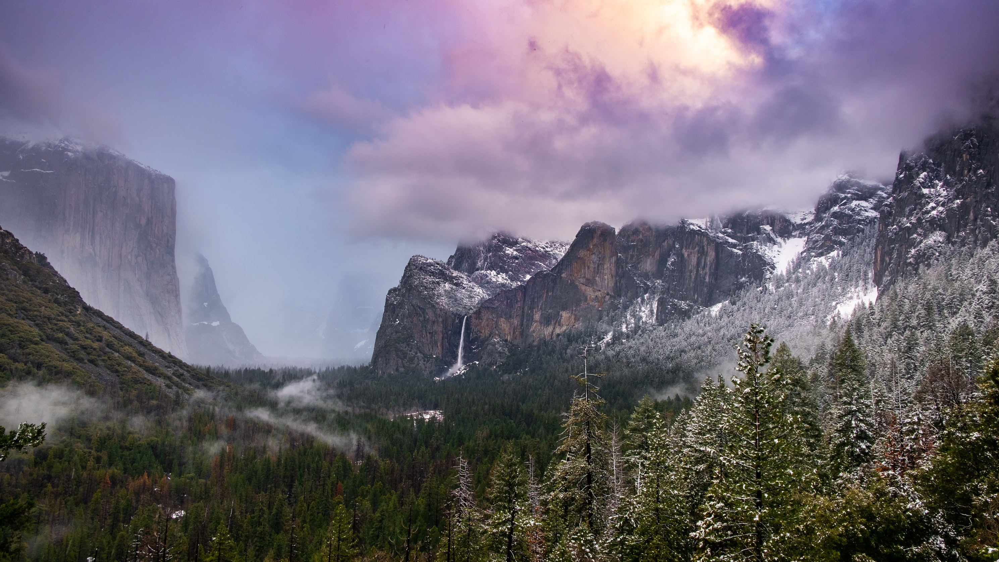

Bonjour Chalengeur

|
Europe is a continent located entirely in the Northern Hemisphere and mostly in the Eastern Hemisphere. It comprises the westernmost part of Eurasia and is bordered by the Arctic Ocean to the north, the Atlantic Ocean to the west, the Mediterranean Sea to the south, and Asia to the east. Europe is commonly considered to be separated from Asia by the watershed of the Ural Mountains, the Ural River, the Caspian Sea, the Greater Caucasus, the Black Sea, and the waterways of the Turkish Straits. Although some of this border is over land, Europe is generally accorded the status of a full continent because of its great physical size and the weight of history and tradition. |
|
Europe covers about 10,180,000 km2 (3,930,000 sq mi), or 2% of the Earth's surface (6.8% of land area), making it the second smallest continent. Politically, Europe is divided into about fifty sovereign states, of which Russia is the largest and most populous, spanning 39% of the continent and comprising 15% of its population. Europe had a total population of about 741 million (about 11% of the world population) as of 2018.The European climate is largely affected by warm Atlantic currents that temper winters and summers on much of the continent, even at latitudes along which the climate in Asia and North America is severe. Further from the sea, seasonal differences are more noticeable than close to the coast. |

|
ParisWhat an amazing city |

AlpsHills peep o'er hills, and Alps on Alps arise. |

GreeceEverything flows |